Blog: Reverse engineering a 4 layer PCB, the slow and destructive way
description: Excitement! There was a sketchy padded envelope in the mail today. Where do we go next?
date published: 2018-11-16 | date updated: 2018-11-16

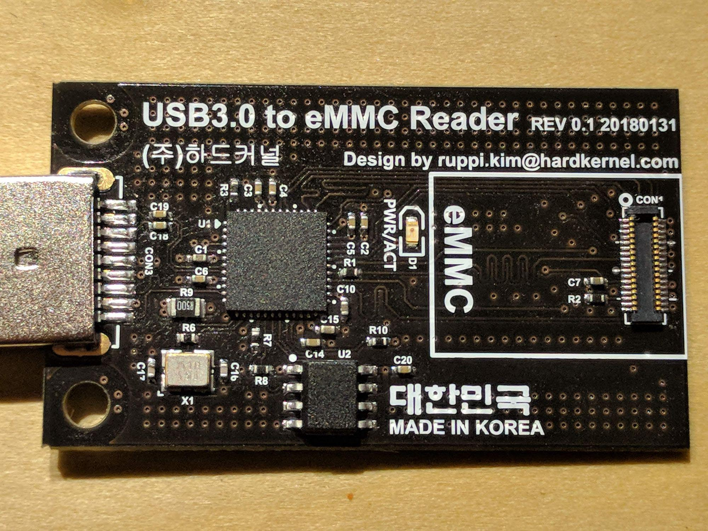
So say there's a Chinese silicon vendor which designs and sells a chip that does a lot of really fancy stuff. You're super interested because said fancy bits can be had for the low low price of a few hundred pennies. Awesome, you might say, lets buy them! But there's an issue. Documentation. Silicon vendors, Chinese or otherwise, have a nasty habit of making it nearly impossible to find proper documentation for a specific product; whether it's poorly documented, NDA'd, or in some cases simply nonexistent.
So what can you do? You could find someone who sells a product based on the chip you want to use, but if it's extensible and has a lot of features you may not be able to find something you can easily shoehorn into your design. You could try contacting them to see if the offer of buying a zillion of their chips can coax them into releasing precious bits of documentation, but there are generally engineering fees associated with this. You could offer to sign an NDA, but generally they don't let someone off the street sign one, and that precludes you from open sourcing your awesome new project.
Once you've tried knocking on those doors, there's basically not much else you can do to get proper documentation. In your hypothetical situation, let's assume there is one or more existing products which are, of course, not open source based on this fancy hotness you're so interested in. For argument's sake, lets assume that this chip is not something trivially placed on a simple 2 layer board. It's QFN, BGA, quite possibly with some RF goodness. Since, aside passive component values, reverse engineering a 2 layer board can pretty easily be done with just high quality images.
Meet the Genesys Logic GL3224. Less than 200 pennies in single quantity! It's a fancy USB 3.0 eMMC/SD MMC controller with a bunch of really cool features. Genesys Logic themselves offer up a sick single-page (as per usual) short touting all of its features. A bit of Google fu reveals a 25 page datasheet and a few existing products based on this chip. One product in particular caught my eye. Searches on Amazon etc for GL3224 turned up a lot of products, mostly polished ones with nice injection mold plastic cases that were a bit too pricey. At the time of this writing, the Hardkernel store that I bought these for $10 404's, but you can still get these boards fairly cheaply.
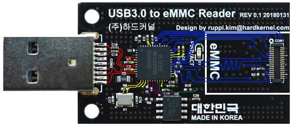
So you buy a couple of these, they're on the slow boat from China. What's the first step? Is there anything we can do while we wait? Of course! The top and bottom layers are exposed (albeit on black soldermask which is pretty but a pain to RE), and you can begin like so many 2 layer RE's have in the past. By staring and squinting at a series of potato quality pictures of the board, highlighting traces, colorizing layers, overlaying things, and trying to get a rough idea of what's going on. From the datasheet we have the pinout and other general information about the chip that will help us, and we have the pinout of the eMMC connector because it's one of the ODROID standardized ones.
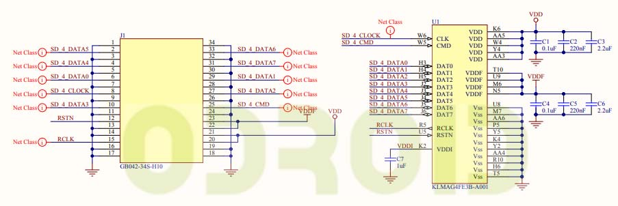
Excitement! There was a sketchy padded envelope in the mail today. Where do we go next? You're going to need some hot air reworking tools and a relatively high DPI scanner. The one that I bought is capable of doing 9600 DPI (which is absolutely insane), but you can probably get away with anything above ~600 DPI. Start by removing all of the tall components, large capacitors, connectors, etc. The taller the components, the more out of focus the images you take will be, most scanners have a fixed focal point.
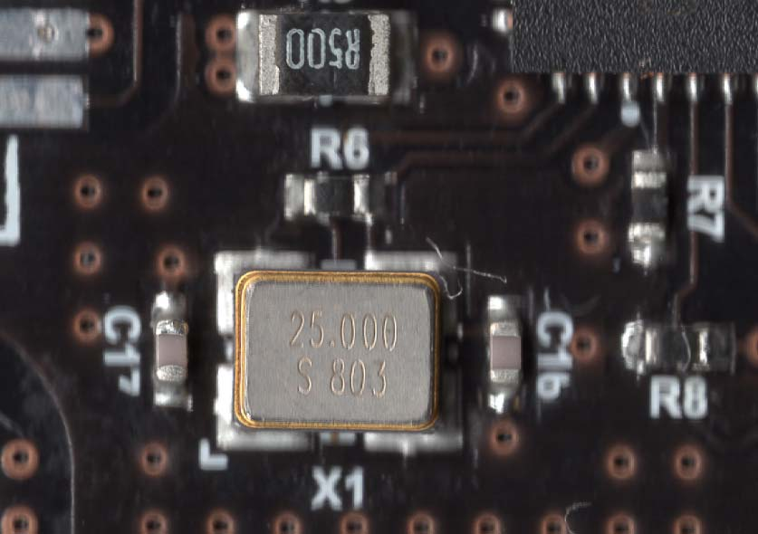
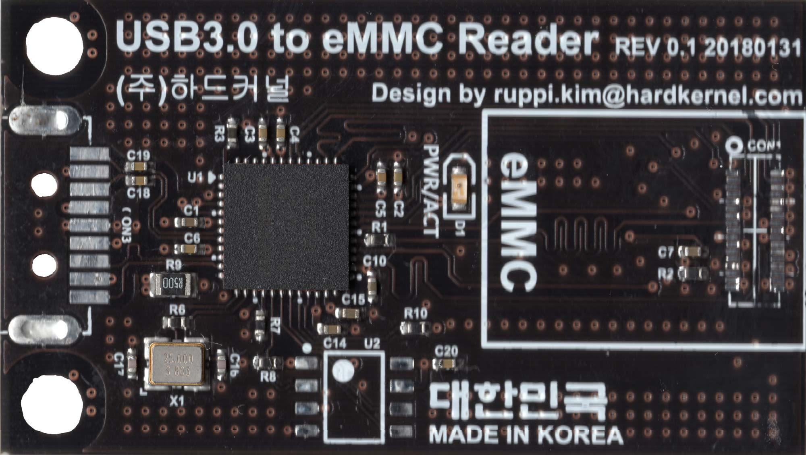
Once you have some quality scans of the board, start carefully removing components one by one. If there are reference designators on the board, use them to identify each component as you remove it, measure it, and record the value. Keeping a meticulous record will help when you go to design your version. Once you've pulled all the parts off and cataloged them, use a soldering iron, some leaded solder, and a bunch of flux to clean all of the excess solder. Take as many scans as you want, once you start sanding there's no turning back.
C1 1.19uF R1 32.7Ω
C2 114nF R2 9.82kΩ
C3 106nF R3 0.2Ω
C4 106nF R6 1.001MΩ
C5 114nF R7 683Ω
C6 106nF R8 10.06kΩ
C7 1.16uF R9 0.6Ω
C10 1.18uF R10 463.5Ω
C14 2.27uF
C15 2.24uF
C16 ?pF
C17 ?PF
C18 115nF
C19 108nF
C20 108nF
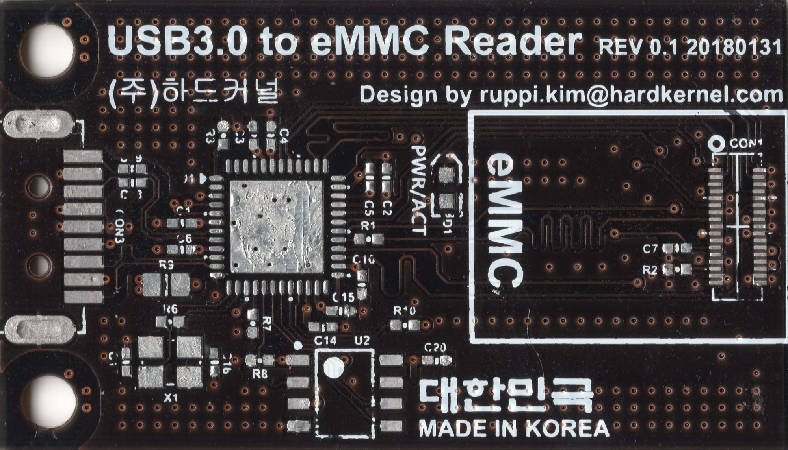
For the sanding, I used a combination of 200 and 600 grit wet dry sand paper. You can get this at any local hardware store. Taking off the soldermask will be extremely quick, especially on this board where you can literally see through the soldermask. Wet a small piece of the 600 grid sand paper and start sanding
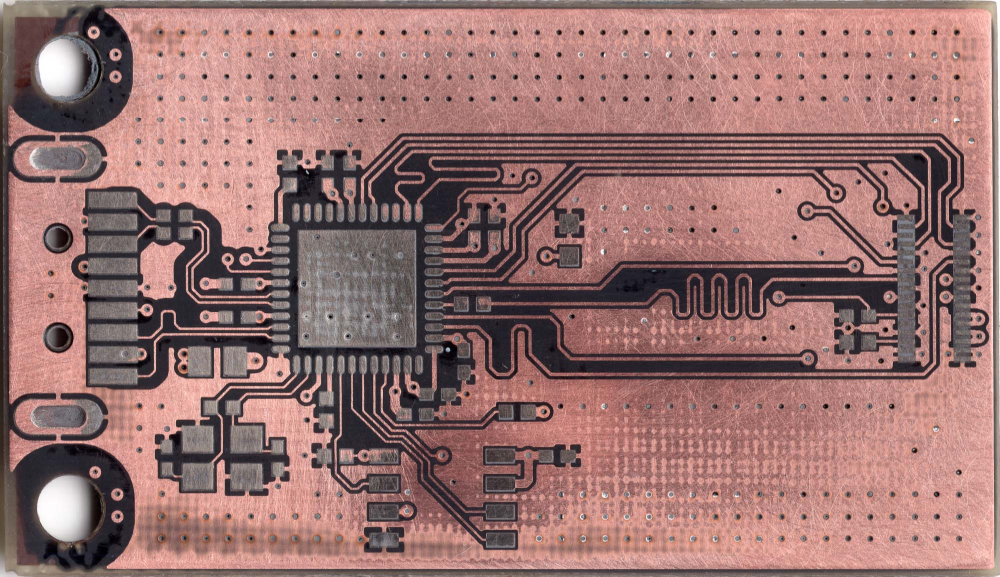
You can see that the contrast on the bare copper compared to the PCB core material is much higher compared to when everything is covered with soldermask. Next, we switch to the 200 grit to sand through the much thicker layer of copper and core material so that we can expose the inner layer.
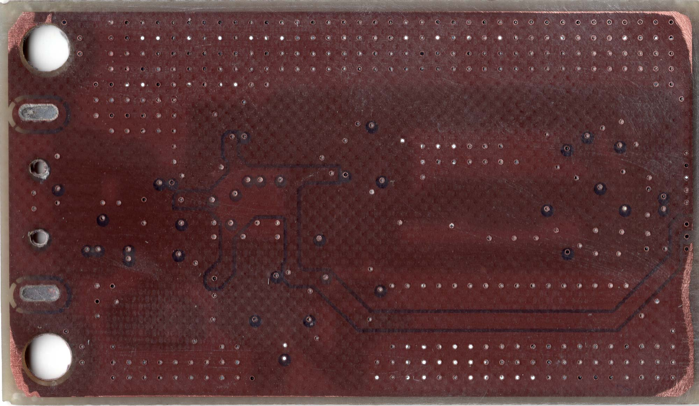
Be sure to apply even pressure while sanding, if you don't you can end up with edges of the board that sand clear through the inner copper layer like I did. It's going to take a while, and make a gigantic mess. My desk is still a sickly shade of green because of this project.
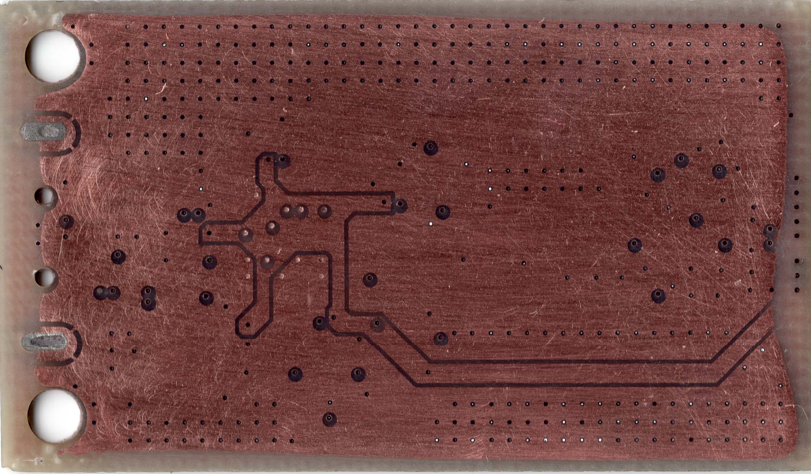
Again, I need to stress that even pressure is extremely important, you can see I even started to wear away parts of that power rail. Once you get to this point, with a 4 layer board, you're done. Switch to the other side, rinse, and repeat. Once you have exposed layer 3 (which in this case was frustratingly only solid ground pour), take all of your scans and composite them. Set each layer to a pure color by dumping the saturation and tweaking with the layer opacity until you get something you can understand. In this case, I chose red for the top layer, green for layer 2, and blue for the bottom layer. The result is pretty good, but if you really put some work into it you can get really great images.
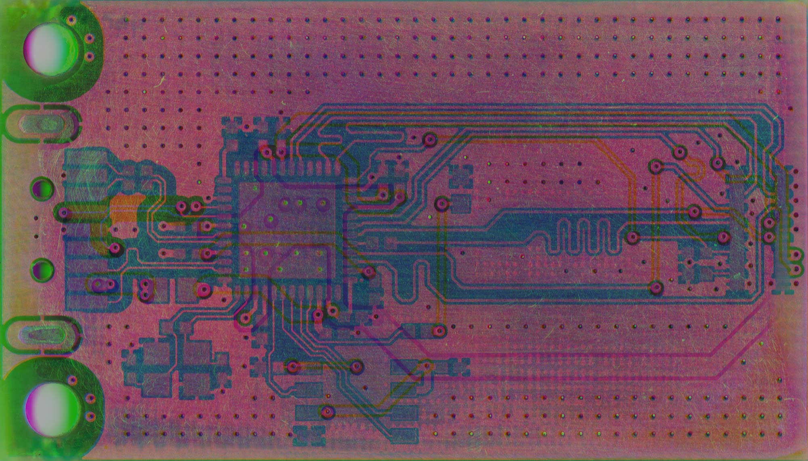
Now that the RE work is done, it's time to do your schematic and layout work. The WIP repository can be found here, and the Eagle library for my GL3224 part can be found here. Keen observers will notice that the connector and pinout for the eMMC that I chose is identical to the one that the Nintendo Switch uses. This board is meant to be a high speed NAND backup and restore utility for the Switch.
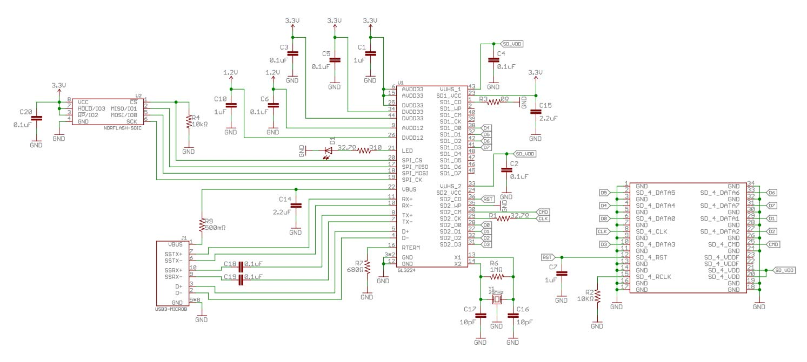